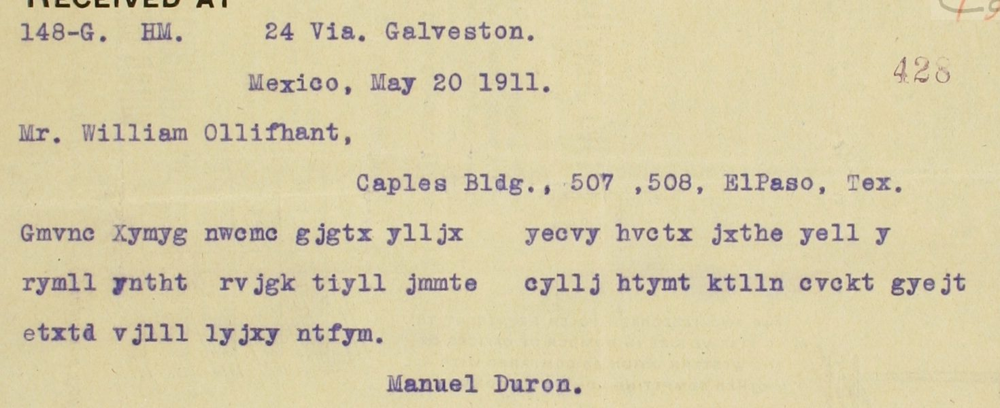

At a glanceCiphertext-only break · partial (79% of the cipher)
- The telegram
- Manuel Durón, Mexico City, to W. Olliphant, the alias of Federico González Garza, at El Paso, 20 May 1911, 9:10 pm, a received Western Union form, no. 428.
- Where
- Centro de Estudios de Historia de México (CEHM), Fundación Carlos Slim, Archivo Federico González Garza, Fondo CMXV, CMXV.18.1777.1-6 (record 12916). Part of catalogue entry 1462, which listed it with no decipherment; not on DECODE.
- The cipher
- A shift of +22 places on a Spanish alphabet of 29 signs (a b c ch d e f g h i j k l ll m n ñ o p q r s t u v w x y z); the first two signs are a header. The telegraph has no ñ, so a cipher n can be t or u.
- How it was read
- The key was recovered from the 107 signs of the ciphertext, by a free substitution anneal and by a sweep of every shift on six alphabets. An independent sweep for this page, of 166 alphabet-and-shift candidates scored with a Spanish language model, puts the same key first by a wide margin. The transcription was compared with the CEHM image: all 24 typed groups agree.
- What it says
- “Cuídese muchísimo Madero de licenciado Daniel Reyes Retana y compañeros. Salieron a ésa.” The first name, one wrong sign, is only probable.
- Still open
- Validation on new text (too short, declared in advance), the first name (Daniel here, Ismael in the sister telegram), the three signs “dak”, and a human check of the transcription.
- Credit
- Brice Dudout (with AI agents): transcription, protocol, key recovery, reading. Daniel Bourdeau: catalogue entry 1462 and the pointer to the key cards. Other 1911 telegrams of this fonds read with other keys have their own pages (see the last section).
01 The telegram
CMXV.18.1777.1-6 is a received telegram on a Western Union form, sent from Mexico City on 20 May 1911 at 9:10 pm by Manuel Durón to “Mr. William Ollifhant” (the form types the name so; the sister telegram has “Olliphant”), Caples Building, El Paso. W. Olliphant is the alias of Federico González Garza, as the CEHM record gives it. The text is 24 groups of up to five letters, typed, with no clear word in it and no gloss on the sheet. It is not the same telegram as its neighbour CMXV.18.1777.2-6, signed “Elisa” (4:21 pm the same day, 97 letters), which was deciphered at the time: the hour, the number and the length differ, and so does the key.
The catalogue entry 1462 lists it with no decipherment. The CEHM record’s subject line for it (“Blanco, es jefe de un complot para asesinar a Francisco I. Madero”) is the same on the neighbouring records 1777.2-6 and 1777.3-6, so it describes the file and is taken from the Elisa gloss, not from a reading of this telegram. It is not in the typed list of period decipherments CMXV.18.1795.1 (searched by the contributor, 45 pages of OCR). Narváez 2011 was checked by the contributor and has nothing on it; Narváez 2019 could not be checked.

02 The key
The key is a simple shift on a Spanish alphabet of 29 signs, with ch, ll, ñ and w: cipher = plain + 22 places (mod 29), so plain = cipher + 7. The cipher sign ñ is typed n, so a cipher n reads t or u; there are five such signs in the text (cuídese, muchísimo, retana, partícipamelo, detalles), settled by the sense (the contributor counts four). The cipher sign ll is typed LL, and in “VJLLL LYJXY” the space falls inside ll ll; joined, the two groups read “correo de-”. The first two signs, GM, decode to “m s” and are a header, left out of the text and of the count.
How the key was found: a general substitution anneal, with no shift assumed, gave “… madero de licenciado … reyes retana y compañeros … correo detalles”, and the table it found was a shift. A sweep of every shift on six alphabets (26, 27, 28, 28 without w, 27 with ch and ll, 29 signs) then gave one reading only. These are two methods on the same 107 signs, not two tests. Before decoding, a single measure was frozen that tried every key of the fonds as it stands, including the shift of the sister telegram: none applies (best 0.259 against a best control of 0.365; the measure script is not in the pull request, so this was not re-run).
03 Not validated, and why
The contributor declared in advance (by his record, a protocol frozen at 16:12 CET on 12 November 2026, before decoding) that 107 signs leave no room for a held-out portion of 300 letters, so no reading of this telegram can be validated, whatever it looks like. That declaration stands: the key was built on the whole text, and the verdict in the profile is “too short”. A second telegram in the same key, or a period decipherment, would validate it; none is known among the 136 coded pieces of the fonds that the contributor harvested.
What can be said without a held-out test is limited and different. For this page the contributor’s key was checked with a decoder written here from the key rule, which gives the same plain text group for group, and the shift sweep was redone over seven alphabet variants with a 4-gram model of Don Quijote: the key scores −2.36 per character, the best other of 166 candidates −3.32. One shift of one alphabet turning all but four of the 105 text signs into a Spanish sentence that names Madero, Reyes Retana and “correo detalles” is very unlikely to be chance; but that is the reading judging itself on the text the key was fitted to, and it is not the held-out test the protocol asks for.
04 The reading
[ms] Cuídese muchísimo Madero de licenciado {Daniel} Reyes Retana y compañeros. Salieron a ésa. Partícipamelo {a} {la} [?dak]. Correo detalles.
In English: let Madero be very much on his guard against Licenciado Daniel Reyes Retana and companions. They have left for your city. Let me know of it at the [?dak]. Details by mail. Braces mark probable words, brackets an unresolved one. “Danlel” has one wrong sign (the cipher gives l where i is needed), so Daniel is only probable; the sister telegram of the same day names Ismael Reyes Retana, so the first name is doubtful (an error of the encipherer or of the telegraph, or another person), and this page does not choose. “Ladak” is “a la” plus an unresolved “dak”, perhaps a transmission error; no repair is forced. The form itself types the addressee’s name with an f for a p, so slips of the telegraph are visible on the sheet, which fits these two readings without settling either.
Counted by the README rule, header excluded: 19 words, 15 sure, 3 probable (Daniel, a, la), 0 restored, 1 unresolved (dak). Sure words only: 15 of 19 = 78.9%. The contributor’s count with the probable words as read is 18 of 19 = 94.7%, still under 95%. Read in part either way.
Context, from the contributor’s notes. 20 May 1911 is the eve of the Treaty of Ciudad Juárez (21 May). That afternoon the Elisa telegram reported Ismael Reyes Retana of Blanco’s staff as head of a plot to kill Madero; this telegram, from another sender in another key that evening, warns Madero against a Licenciado Reyes Retana and his companions, who “have left for your city”. (This background is not from the sources and was not checked here.)
05 The sister telegram, and one key
CMXV.18.1777.2-6 (“Elisa”) is a continuous string of 97 letters with a pencil decipherment of the time: “Díceme Ing. Rivera Balatayud urge sepan Ismael Reyes Retana, Estado Mayor Blanco, es jefe complot asesinar Madero.” Decoded for this page from its image, it is a shift on a 28-sign alphabet (a to z with ll and ñ, no ch): cipher = plain + 10. That is a different alphabet and a different shift from this telegram’s (29 signs, +22), so the two are two keys, as the contributor says, and this telegram is its own entry.
The contributor noticed, after the reading and without counting it, that in both telegrams the shift equals the first header sign minus the second: P (17) − H (7) = 10 on 28 signs, G (7) − M (14) = −7 = +22 on 29. It holds by the count made here, but it rests on two telegrams and was seen afterwards; it is a lead to test on other telegrams of the fonds, not evidence. The other 1911 telegrams of the traffic use other keys and have their own pages: the “Herrera. Moreno.” card, the Hernández card, the Clave G.A. digraphic card and the turning grille.
06 What remains uncertain
- Validation of the key by a held-out test: blocker too short (107 signs, 300 letters needed). A second telegram in this key, or a period decipherment, would do it.
- The first name “danlel” ({Daniel}): one wrong sign, against Ismael in the sister telegram. The telegraph form or a period source would settle it (needs the physical record).
- “dak” after “partícipamelo a la”: three signs, perhaps a transmission error; too short to decide.
- The transcription: all 24 typed groups agree with the public CEHM image (compared for this page), but no human palaeographer has checked it. The image host fails TLS verification; the image was fetched over plain http.
- The five cipher n read as t or u by the sense (not by the key).
- Narváez 2019 (the SRE book, chapters VII–VIII) was not checked; whether the telegram is in print is not known.
Full texts
The transcription and the decryption of every document on this page, so that the reading can be used and checked. Short files are shown here; all are in the repository.
Manuel Durón, México, to W. Olliphant, El Paso, 20 May 1911 (CEHM-Carso CMXV.18.1777.1-6) read in part
Mexico City, evening of 20 May 1911: Madero must beware of Licenciado {Daniel} Reyes Retana and companions, who have left for El Paso; let me know; details by mail. The sister telegram of that afternoon (1777.2-6) reports Ismael Reyes Retana as head of a plot to kill Madero. Key not validated.
Builds coherent sentences, but under the read bar of 95% of words read as sense (79% here); the holes are marked in the reading.
Transcription
# duron1911 - CEHM-Carso, Fondo CMXV (Archivo Federico González Garza), CMXV.18.1777.1-6
# Telegram, Manuel Durón, México, to W. Olliphant (= Federico González Garza), El Paso, 20 May 1911, 9:10 pm, no. 428.
# Transcribed by Brice Dudout's project from the CEHM public viewer image (study copy, not redistributed), 12 Nov 2026,
# before any key was tried on it; frozen as part of T-sanantonio-duron-v1.txt (SHA-256 100db048...), rechecked
# against the image on 12 Nov 2026 with no change. Cipher letters as typed by the telegraph office, groups as spaced
# on the form ("YELL Y" is spaced so on the form). No clear words inside the text, no gloss on the sheet.
# 115 letters = 107 signs when "ll" is counted as one sign.
GMVNC XYMYG NWCMC GJGTX YLLJX YECVY HVCTX JXTHE YELL Y RYMLL YNTHT RVJGK TIYLL JMMTE CYLLJ HTYMT KTLLN CVCKT GYEJT ETXTD VJLLL LYJXY NTFYMDecryption
# duron1911 - CMXV.18.1777.1-6, decryption line by line # Key: shift on the 29-sign Spanish alphabet a b c ch d e f g h i j k l ll m n ñ o p q r s t u v w x y z; # cipher = plain + 22 (mod 29), so plain = cipher + 7. 'll' in the cipher is one sign (plain r). # The cipher sign ñ (plain u) has no telegraph letter and is typed 'n': cipher n reads t or u (marked t/u). # Columns: cipher group as typed | cipher signs | plain signs. The first two signs (GM -> m s) are the header. # 'VJLLL LYJXY': the space falls inside 'll ll'; the two groups are joined before cutting into signs. # 107 signs in all (2 header + 105 text). GMVNC | g m v n c | m s c t/u i XYMYG | x y m y g | d e s e m NWCMC | n w c m c | t/u ch i s i GJGTX | g j g t x | m o m a d YLLJX | y ll j x | e r o d YECVY | y e c v y | e l i c e HVCTX | h v c t x | n c i a d JXTHE | j x t h e | o d a n l YELL | y e ll | e l r Y | y | e RYMLL | r y m ll | y e s r YNTHT | y n t h t | e t/u a n a RVJGK | r v j g k | y c o m p TIYLL | t i y ll | a ñ e r JMMTE | j m m t e | o s s a l CYLLJ | c y ll j | i e r o HTYMT | h t y m t | n a e s a KTLLN | k t ll n | p a r t/u CVCKT | c v c k t | i c i p a GYEJT | g y e j t | m e l o a ETXTD | e t x t d | l a d a k VJLLL LYJXY | v j ll ll y j x y | c o r r e o d e NTFYM | n t f y m | t/u a ll e s # Plain signs run together (header in brackets; t/u resolved by the sense): [m s] cuidese muchisimo madero de licenciado danlel reyes retana y compañeros salieron a esa participamelo a la dak correo detalles
Reading
# CMXV.18.1777.1-6 - reading (Manuel Durón, México, to W. Olliphant, El Paso, 20 May 1911, 9:10 pm)
Status: read in part (Brice Dudout, 12 Nov 2026; 15 sure + 3 probable of 19 words; key not validated, text too short).
Marks: plain words are sure (S); `{word}` probable (P); `[word]` restored (R, none here); `[?abc]` unresolved (I).
The two header signs ("m s") are left out of the text and of the count.
## Text (Spanish)
> Cuídese muchísimo Madero de licenciado {Daniel} Reyes Retana y compañeros. Salieron a ésa. Particípamelo {a} {la} [?dak]. Correo detalles.
## English translation
> Let Madero be very much on his guard against Licenciado {Daniel} Reyes Retana and companions. They have left for your city. Let me know of it {at the} [?dak]. Details by mail.
## Notes on the reading
- "danlel": one sign is wrong (cipher E = l where C = i is needed), so {Daniel} is probable only. The sister telegram
of the same day, CMXV.18.1777.2-6 (signed "Elisa", 4:21 pm), deciphered at the time, names **Ismael** Reyes Retana.
So the first name here is doubtful: an error of the encipherer or of the telegraph, or another person.
- "VJLLL LYJXY": the space falls inside "ll ll"; joined, it reads "correo de-" (correo detalles).
- "ladak" (ETXTD): "a la" + an unresolved "dak", perhaps a transmission error; not forced.
- Cipher "n" stands for the cipher sign ñ as well as for itself, so it reads t or u; all four cases are settled by
the sense (cuídese, retana, particípamelo, detalles).
## Count (README read bar, words; header excluded)
| | words |
|---|---|
| sure (S) | 15: cuídese, muchísimo, Madero, de, licenciado, Reyes, Retana, y, compañeros, salieron, a, ésa, particípamelo, correo, detalles |
| probable (P) | 3: Daniel, a, la |
| restored (R) | 0 |
| unresolved (I) | 1: dak |
| total | 19 |
- Strict count (sure words only): 15 of 19 = 78.9 %.
- Counting the probable words as read: 18 of 19 = 94.7 %, still under 95 %.
- Either way: **read in part**. Signs: 105 signs of text, 3 unresolved (dak), 1 wrong (the l of "danlel").
## Context
20 May 1911, the day before the Treaty of Ciudad Juárez (21 May). The sister telegram 1777.2-6 of the same afternoon,
deciphered at the time, reports Ismael Reyes Retana, of Blanco's staff, as the head of a plot to kill Madero;
this telegram, sent that evening from Mexico City by another sender with another key, warns Madero against a
Licenciado Reyes Retana and his companions, who "have left for your city" (El Paso / Ciudad Juárez).Translation
# CMXV.18.1777.1-6 - English translation
Manuel Durón, México, to W. Olliphant (Federico González Garza), El Paso, 20 May 1911, 9:10 pm, no. 428.
Marks as in `reading.md`: `{word}` probable, `[?abc]` unresolved.
> Let Madero be very much on his guard against Licenciado {Daniel} Reyes Retana and companions. They have left for your city. Let me know of it {at the} [?dak]. Details by mail.
- "Daniel" is doubtful: the sister telegram of the same day (CMXV.18.1777.2-6, "Elisa") names Ismael Reyes Retana.
- "Particípamelo" = "let me know of it" (literally "inform me of it").Key: key.txt
07 Sources
- CEHM-Carso, Fondo CMXV: CMXV.18.1777.1-6 (record 12916), CMXV.18.1777.2-6 (record 12917, the Elisa telegram with its pencil decipherment), the typed list of decipherments CMXV.18.1795.1; public images on the CEHM viewer, one crop shown here.
- Catalogue entry 1462 (Daniel Bourdeau), which lists the telegram as undeciphered.
- Transcription, protocol, key recovery and reading by Brice Dudout with AI agents (pull request #488), in
targets/duron1911; the integration check is in its NOTES.
The key, the transcription, the reading and the protocol are in targets/duron1911.
Cite this page
Brice Dudout and Daniel Bourdeau, “Manuel Durón to W. Olliphant, Mexico City, 20 May 1911”, Cyphersolver, posted 12 November 2026, https://cyphersolver.com/duron1911.html.